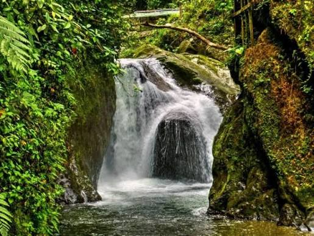
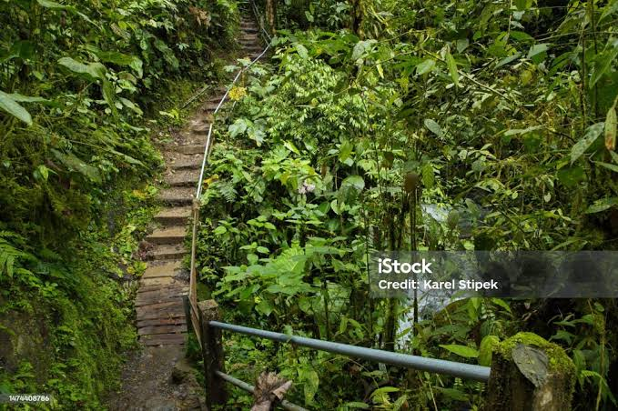
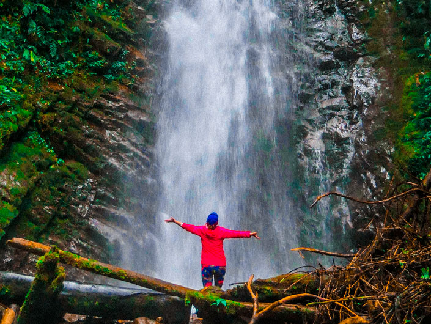

Descripción
El complejo de las Cascadas de Nambillo es uno de los atractivos más visitados de Mindo. El recorrido incluye acceso a varias caídas de agua impresionantes, rodeadas de exuberante vegetación. Las aguas cristalinas descienden entre rocas y bosque, creando un paisaje espectacular y refrescante.
Ubicación Geográfica
Se encuentran a unos 3 km del centro de Mindo, siguiendo el camino hacia el Río Nambillo. El recorrido comienza en el sector de "El Molino".
Actividades para realizar
- Caminata por senderos señalizados entre el bosque
- Observar y tomar fotografías de las cascadas
- Bañarse en las pozas naturales (donde esté permitido)
- Disfrutar de la naturaleza y el sonido del agua
Galería de Imágenes


